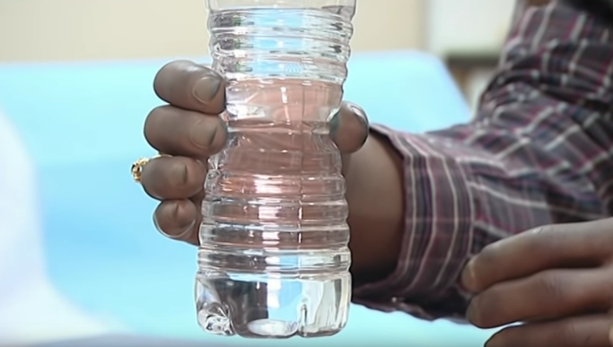

Les membres supérieurs
Les prothèses myoélectriques
Qu'est ce que c'est?
Les prothèses myoélectriques sont destinés à l'amputation des avants bras et de bras
Ça coûte combien?
Le prix de telles prothèses est de 50000 dollars comparer aux prothèses mécaniques qui ont un prix entre 30000 et 40000 dollars
Comment ça fonctionne?
Les prothèses myo électriques sont controlés par des signaux electromyographique(EMG) qui ont lieu lors de la contraction musculaire. Les électrodes enregistrement ces siganux sont généralement placés à la surface de la peau.
Le controle de la prothèse: Le contrôle directe
Pour le contrôle direct vont enregistrer les signaux provenant d'une ou deux électrodes afin d'enregister les degrés de liberté. Ces signaux sont comparés à des seuils prédeterminés et une action est produite selon le mode de la prothèse. La prothèse doit avoir plusieurs modes pour permettre plusieurs mouvements et pour exécuter les changements de mode els clients doivent exécuter un mouvement prédéterminé.
Le controle proportionnel
Il permet de controler la vitesse des mouvements de la prothèse en fonction de l'amplitude du signal EMG ou de la force de contraction. Ce controle s'effectue en faisant la différence entre le seuil prédertiminé de la prothèse et l'amplitude du signal afin de controler la direction et la vitesse du mouvement de la prothèse.
Existe t'il d'autre façon de controler la prothèse?
Oui bien sûr, selon une étude réalisé en 2013 le contôle basé sur la reconnaissance de patron est préférable pour plus d'utilitité et de fonctionnalité. Ce contrôle nécessite beaucoup d'entrainements par les clients et présente un grand défi pour ces derniers.
Pourquoi un tel contrôle?
Ce contrôle permet d'éviter de faire des séquences de mouvements non reliés pour changer de modes et permet aux clients de faire des mouvements naturels et intuitif pour controler les mouvements de la prothèse. Les patrons EMG unique permettent plus de degrés de libertés actifs
Comment est elle alimentée en énergie?
Elle peut être muni de piles rechargeables permettant son fonctionnement.
Exemple de prothèse
Cette prothèse possède des capteurs de glisse permettant de saisir plus facilement des objets et de savoir quelle pression il faut mettre pour pas écabouiller la bouteille.